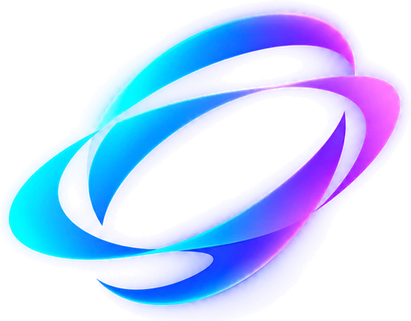
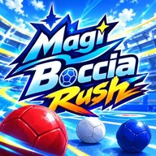
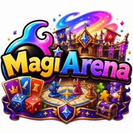
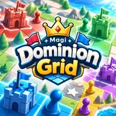
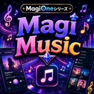
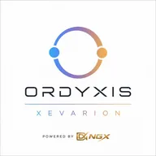

XEVARION II ・ 2026.11
XEVARION、
XEVARION、
つぎの章へ。
XEVARION を1からつくり直した新しいポータル XEVARION II を、NGX とともに運営・製作しています。柚葉・水瀬・美月の3人と、7本のアプリから。
XEVARION を1からつくり直した新しいポータル XEVARION II を、NGX とともに運営・製作しています。柚葉・水瀬・美月の3人と、7本のアプリから。
学ぶ・あそぶ・みんなで囲む・つながる。XEVARION のひとつのアカウントで使える 28本のアプリを、企画から演出まで手がけています。
NGX・Magical Future・ISHIDA Production・YRA、そして運営協力に参入した Kawagani と STUDIO DOGA。起動の画面に並ぶ6社のロゴとともに、毎日の体験をお届けします。
ORDYXIS は、お客様の端末で注文し、番号でお呼び出しする店頭オンラインオーダーシステム。ISHIDA Production が製作パートナーを務めています。

XEVARION を1からつくり直した新しいポータル。NGX とともに運営・製作しています。ひとつのアカウントで、7本のアプリと XEVA・ジェム・ガチャがつながります。はじめての10連で、柚葉・水瀬・美月の3人のうち1人があなたのパートナーに。
 柚葉FLARE
水瀬TIDE
柚葉FLARE
水瀬TIDE
 美月TERRA
美月TERRA
 化学の問題集MagiLex1,569問の化学の問題集。忘れるころに出し直す復習、ケミカル・ルート、ビンゴ。
化学クイズ対戦MagiQuiz1台を囲んで、見えない爆弾・早押しバトルなど4つの遊び方。2台で対戦も。
化学の問題集MagiLex1,569問の化学の問題集。忘れるころに出し直す復習、ケミカル・ルート、ビンゴ。
化学クイズ対戦MagiQuiz1台を囲んで、見えない爆弾・早押しバトルなど4つの遊び方。2台で対戦も。
 競馬 GⅠMagiDerby実際の JRA 平地 GⅠ に XEVA で。出馬表・オッズ・結果・払戻金はすべて本物。
対戦ボードゲームMagiShift置いた駒をあとから動かせる、2〜8人の対戦ボードゲーム。CPU つき。
連鎖陣取りMagiChainPartyマスをタップするだけ、運の要素ゼロの頭脳戦。部屋番号でオンライン対戦も。
競馬 GⅠMagiDerby実際の JRA 平地 GⅠ に XEVA で。出馬表・オッズ・結果・払戻金はすべて本物。
対戦ボードゲームMagiShift置いた駒をあとから動かせる、2〜8人の対戦ボードゲーム。CPU つき。
連鎖陣取りMagiChainPartyマスをタップするだけ、運の要素ゼロの頭脳戦。部屋番号でオンライン対戦も。
 パーティーゲームMagiGuraPlate1台を囲んで2〜8人で遊ぶ、バランス皿のパーティーゲーム。順位で XEVA。
サイコロゲームMagiYachtカップでサイコロをふって役をそろえる。1台を囲んでみんなで。
パーティーゲームMagiGuraPlate1台を囲んで2〜8人で遊ぶ、バランス皿のパーティーゲーム。順位で XEVA。
サイコロゲームMagiYachtカップでサイコロをふって役をそろえる。1台を囲んでみんなで。
MagiLex をはじめ、初代 XEVARION のアプリ 27本と、店舗の注文システム ORDYXIS。XEVARION II にあるアプリは、押すと II で開きます。
学びの入口MagiLexMagiChemLex と旧MagiLex（英単語〈発音つき〉・化学・古文）から選んで学ぶ入口。オフライン学習OK。
化学の問題集MagiChemLex入試問題の改題・基礎セット・単元別の関連問題。間隔反復の復習、模試の冊子、フラッシュカード、毎月のビンゴ。
 学習管理MagiFocus手とスマホを見張る AI で勉強を守る学習管理。タイムライン・予定カレンダー・実績つき。
学習管理MagiFocus手とスマホを見張る AI で勉強を守る学習管理。タイムライン・予定カレンダー・実績つき。 シューティングRPG・NEWMagiBattle2026年10月に1から作り直し。後ろから見たドット絵の5人で撃つ遮蔽物シューティングと、ほかのプレイヤーと競うアリーナ。
シューティングRPG・NEWMagiBattle2026年10月に1から作り直し。後ろから見たドット絵の5人で撃つ遮蔽物シューティングと、ほかのプレイヤーと競うアリーナ。 ドットアクションRPGMagiAbyss広大な迷宮を探索し、大量の敵をなぎ払う見下ろし型の RPG。武器・魔法・装備の組み合わせで自分だけのビルドを。競馬 GⅠMagiDerby実際の JRA 平地 GⅠ に XEVA で賭ける。出馬表・オッズ・結果・払戻金はすべて本物を自動取得。
ドットアクションRPGMagiAbyss広大な迷宮を探索し、大量の敵をなぎ払う見下ろし型の RPG。武器・魔法・装備の組み合わせで自分だけのビルドを。競馬 GⅠMagiDerby実際の JRA 平地 GⅠ に XEVA で賭ける。出馬表・オッズ・結果・払戻金はすべて本物を自動取得。

ボッチャ対戦MagiBocciaRush本格ボッチャ × 引っぱりショット × キャラクターの固有能力。3人の編成で投げる戦略スポーツ。
対戦の闘技場MagiArena1台でみんなと対戦する闘技場。オリジナルの陣取りに、オセロ・五目並べ・神経衰弱も。2〜6人。 カジノ・パーティーMagiJackpotXEVA とジェムで遊ぶカジノ＆パーティー。スロット・ブラックジャック・パチンコに、パーティーとオンライン対戦も。
カジノ・パーティーMagiJackpotXEVA とジェムで遊ぶカジノ＆パーティー。スロット・ブラックジャック・パチンコに、パーティーとオンライン対戦も。
思考の陣取りMagi Dominion Grid2〜10人が同時に行動をえらぶリアルタイム陣取り。勝ち負けは盤面の読みだけで決まる。
音楽プレイヤーMagiMusicXEVARION の音楽をいつでもどこでも。回転ディスクとビート連動の演出、バックグラウンド再生。 対戦支援・編成分析MagiCounter対戦ゲームの対策・分析ツール。相手を分析して、最適な3体の選出と編成の改善までをスマホで。
対戦支援・編成分析MagiCounter対戦ゲームの対策・分析ツール。相手を分析して、最適な3体の選出と編成の改善までをスマホで。 Tier表作成MagiTierTier 表の作成からプレゼンまで。カードを並べ替えて、自分のランキングを発信。
Tier表作成MagiTierTier 表の作成からプレゼンまで。カードを並べ替えて、自分のランキングを発信。
店頭オーダーORDYXISお客様の端末で注文、店舗で受付、番号でお呼び出し。店頭モニターでのご案内まで。2026年10月に YRA、11月に Kawagani と STUDIO DOGA が運営協力に参入。初代 XEVARION の起動の画面には、6社のロゴが並びました。XEVARION II は NGX と ISHIDA Production の2社でお届けします。
 Magical Future技術提携初代 XEVARION
Magical Future技術提携初代 XEVARION Kawagani運営協力初代 XEVARION
Kawagani運営協力初代 XEVARION小さく速く、しかし妥協しない。ISHIDA Production が大切にしていること。
iPad を囲む対戦から、お店の業務端末、スマホのホーム画面アプリまで。どの画面でも快適に動き、電波の無いところでも開けるように作ります。
親しみやすく、ひと目で分かる。ドット絵・カットイン・ガチャの演出まで、遊び心のある表現を自分たちで描き起こします。
途中保存・やり直し・オフラインでも動くしくみ・端末をまたぐ同期。毎日使っても壊れない細部まで作り込みます。
ご要望をいただいてから配信まで。週に何度も届けるアップデートを、6つのステップで回しています。
届いたご要望をひとつずつ一覧に。後回しにするものも記録して、取りこぼしません。
見え方・性能・遊び方など大きな分かれ道は、選択肢と見本をそえてご相談します。
実装とアートを同時に。ドット絵やカットインまで、その場で描き起こします。
実際のブラウザで操作・同期・オフラインを確かめ、データの不具合は元の情報までさかのぼって直します。
版ごとにまとめてお届け。更新画面のダウンロード量・お知らせ・デベロッパーノートまでそろえます。
使われかたとご報告を見ながら、次の版へ。ご報告は真因を見つけてから直します。
2026年、XEVARION とともに増えてきたアプリと大きな更新。そして XEVARION II へ。
最初のフェスガチャ。キャラクターとガチャは、のちに XEVARION 全体で共通に。
ガチャと図鑑をポータルへ集約。設定と見た目をまとめる Xevion OS、オフラインの自動更新。
1台を 2〜10人で囲む、運の要素ゼロの陣取り。
本格ボッチャと引っぱりアクションの対戦スポーツ。
鉄道経営シム、実際のランキングを届けるエンタメ情報、2〜8人の対戦ボードゲーム。
見下ろし型のドットアクション RPG。のちに 2.5D の町と HD ドットへ。
化学の問題集。改題・基礎・単元別・模試の冊子・ビンゴ。
実際の JRA GⅠ の競馬、1台で遊ぶ化学クイズ。MagiLex は MagiChemLex と旧MagiLex の入口に。デベロッパーノートを開始。
Kawagani と STUDIO DOGA が運営協力に参入。起動の画面に6社のロゴ。
YRA が運営協力に参入。起動の画面に4社のロゴ。
後ろから見たドット絵の5人で戦う遮蔽物シューティングとアリーナに。XEVARION の全機能を動きで紹介するガイドも。
XEVARION を1からつくり直し、NGX とともに運営・製作。柚葉・水瀬・美月の3人と、MagiYacht から MagiDerby までの7本を順に公開。
ISHIDA Production と、制作に関わるプロダクトの最新情報。
制作のご相談・協業のお問い合わせは、XEVARION のアプリ内のサポートから受け付けています。